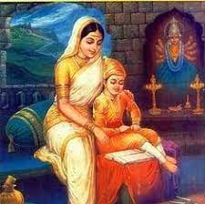

Chatrapati shivaji maharaj(1630-1680)
About
Shivaji shahaji Bhosale also known as chatrapati shivaji maharaj was a great Indian king and strategist who laid the foundation of the Maratha Empire in western India in 1674 AD. For this he fought with Aurangzeb , the ruler of the Mughal Empire . He was coronated in Raigad in 1674 and became "Chhatrapati". Chhatrapati Shivaji Maharaj provided an efficient and progressive administration with the help of his disciplined army and well organized administrative units. He revived ancient Hindu political practices and courtly etiquette and made Marathi and Sanskrit the official language.

Early life
Shivaji was born on February 19, 1630 in Shivneri fort .His father Shahaji Bhonsle was a powerful feudatory. His mother Jijabai Jadhav was an exceptionally talented woman born in the clan. Parents had a great influence on the character of Shivaji Maharaj. He spent his childhood under the guidance of his mother. The flame of freedom was kindled in his heart. He gathered and united some faithful friends.First encounter with Mughals
Both Bijapur and Mughal were enemies of Shivaji. At that time, Prince Aurangzeb was the Subedar of the Deccan . At the same time, Sultan Adilshah of Bijapur died on, after which an atmosphere of anarchy arose in Bijapur. Taking advantage of this situation, Aurangzeb attacked Bijapur and Shivaji instead of supporting Aurangzeb attacked him. His army attacked Junnar city and looted 200 horses along with a lot of wealth. Apart from 700 horses, four elephants from Ahmednagar , he also looted the fort of Gunda and Resin. As a result , Aurangzeb became angry with Shivaji and the friendship talks ended. Aurangzeb on the orders of Shah Jahanmade a treaty with Bijapur and at the same time Shah Jahan fell ill. As soon as he became ill, Aurangzeb went to North India and after imprisoning Shah Jahan there, became the Shah of the Mughal Empire.right to konkan
Knowing the absence of Aurangzeb in South India and the political situation in Bijapur, Shivaji asked Samarji to attack Janjira. But his fight with the Siddis of Janjira lasted for several days. After this Shivaji himself attacked Janjira and took control of South Konkan and collected annual taxes from the Portuguese of Daman. After capturing Kalyan and Bhiwandi , he built a naval base there. By this time Shivaji had become the owner of 40 forts.Meeting and killing afzal khan
Afzal Khan, a renowned general of Bijapur who had previously killed Shivaji's elder brother Sambhaji in a battle, was selected to lead an assault against Shivaji.He started from Bijapur in 1659. Shivaji met Afzal Khan on 10 November 1659. they talked for while and then afzal khan embraced Shivaji. He then tried to strangle Shivaji in his vice-like grip and pierced his dagger in Shivaji. But the armour under Shivaji's clothes saved him. Shivaji retaliated by using his "wagh nakh" (tiger claws) to slash Khan's stomach and disemboweled Khan. Thereupon, Afzal Khan's bodyguard Bada Sayyed attacked Shivaji with a sword but Shivaji's personal bodyguard, Jiva Mahala, fatally struck him down. Also the lawyer of Afzal Khan, Krishna Bhaskar Kulkarni attacked Shivaji. Shivaji killed Krishna Kulkarni with his sword.Death and Succession
Shivaji Maharaj died on 3 April 1680 after being poisoned. At that time Sambhaji got the succession of Shivaji. Shivaji's eldest son was Sambhaji and from his second wife there was a second son named Rajaram. At that time Rajaram was only 10 years old, so the Marathas accepted Shambaji as the king.Inspiring Quotes from Shivaji maharaj
- "Freedom is a boon , which everyone is entitled to get."
- "When the spirits are high , the mountain also looks like a pile of mud."
- "A small step on a small goal , later on achieves a big goal also."
- ""First the nation , then the guru , then the parents , then the Supreme God . Therefore, first the nation should be looked at not by itself.